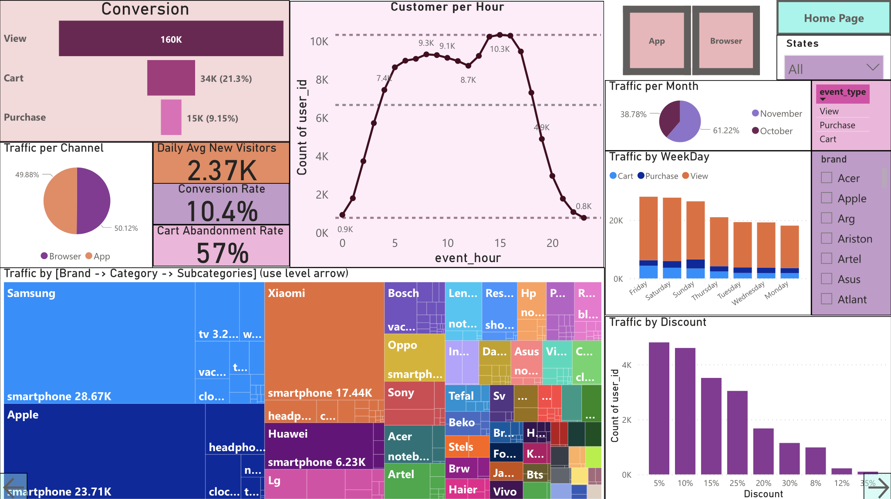

Customer Behavior Dashboard
Introduction:
The Customer Behavior Dashboard provides a holistic view of customer interactions on our e-commerce platform. By delving into key performance indicators (KPIs), this dashboard equips us with actionable insights to enhance customer engagement, optimize conversion rates, and leverage visitor traffic effectively.

Note: These are slicers for customized analysis based on requirement:
1) Channel: App or Browser
2) States
3) Brand
4)Event Type: View,Cart, Purchase.
Do note that cross filters provide a more detailed analysis. e.g selecting a specific WeekDay or Month.
Conversion Metrics:
- Conversion from View to Cart to Purchase :
The conversion rate from customers viewing products to adding them to their carts stands at 21.3% and eventually making a purchase stands at 9.15%. This metric underscores the efficiency of the purchase funnel.
- Conversion Rate :
The overall conversion rate, calculated as the percentage of customers who complete a purchase out of all visitors, is 10.4%.
Cart Abandonment Rate :
- The cart abandonment rate, at 57%, highlights the proportion of customers who add products to their carts but do not complete the purchase. This suggests room for optimization in the purchase process for improved conversions.
Daily Average New Visitors :
- On average, 2.37K new customers are acquired daily, reflecting the steady growth of the customer base.
Traffic Analysis :
- Traffic by Channel: The traffic distribution between the browser and mobile app channels is remarkably consistent, with both channels accounting for a nearly equal share of visits. Traffic on App is 49.88% and Channel is 50.12%. This balanced traffic distribution suggests that our customers show a strong preference for our platform across multiple devices.
- Customer per Hour:
Customer engagement peaks during around 3:00 pm, with overall high traffic from 5:00 am to 5:00 pm, signifying optimal times for targeted promotions and engagement strategies.

- Traffic by Brand, Category, Subcategory: Brand, Category, and Subcategory metrics help identify where customer traffic is most concentrated, Electronics being the most popular category with Samsung attracting maximum number of customers.
- Traffic by WeekDay: Traffic patterns exhibit significant variations among weekdays, with Friday, Saturday, and Sunday being the busiest day. It is important to notice that highest cart addition is on Sunday, and Purchases are also mainly on Friday, Saturday, and Sunday.
- Traffic by Month: Traffic increased by 36.65% from October to November, suggesting an expanding audience and potentially increased engagement, which can lead to higher sales and revenue. Seasonal trends, marketing campaigns, and product launches can be the potential reason.
- Traffic by brand: Samsung is the most popular, followed by Xiomi and Apple. Vivo, Bts and Haier are one of the least popular.
- Traffic by category: Electronics clearly attracts the most traffic with over 120K total visits over 2 months.
- Traffic by Subcategory: Under electronics, smartphones are the most popular amongst customers. This subcategory if dollowed by kitchen appliances.